Módulu 5 (Semana 17 – 20): Fuan Espíritu Santu nian iha Moris
Livru lisaun Súnday School hodi hanorin labarik sira iha Timór-Leste atu haburas fuan Espíritu Santu nian: hein ho laran-pasiénsia, hatudu laran-luak no mizerikórdia, persevera halo servisu di'ak, no hamoos laran ho perdua lialos.
| Semana 17 Lisaun 17 |
Ha'i Kbiit Anin: Hein ho Laran-Pasiénsia 📖 Galásia 5:22 · Tiago 1:19 Fernando iha Baucau dada iis naruk no kaer nia alin nia kabaas ho paz bainhira kareta ai-bambú harat. |
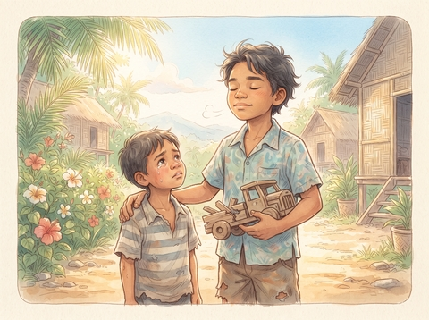 |
| Semana 18 Lisaun 18 |
Laran-Luak no Laran-Mizerikórdia ho Domin 📖 Efésiu 4:32 Ana iha Aileu fahe sombriña kolorida no sasán eskola nian ba belun foun iha kintál eskola nian. |
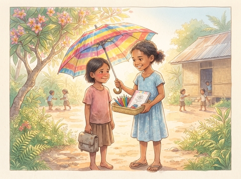 |
| Semana 19 Lisaun 19 |
Hahalok Di'ak no Servisu ho Laran-Mee 📖 Galásia 6:9-10 Jacinto iha Lospalos dasa kintál ho ai-saar nuu-tahan no oin-midar hodi persevera halo di'ak. |
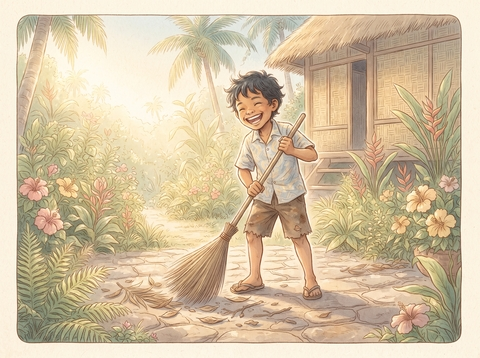 |
| Semana 20 Lisaun 20 |
Hamoos Laran ho Perdua Nia Borracha 📖 Isaías 55:7 · Efésiu 4:31-32 Maria iha Ermera uza 'perdua nia borracha' iha laran hodi fo perdua ba nia primu ki'ik Simao. |
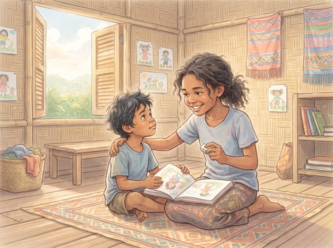 |
|
Fernando iha Baucau dada iis ho paz no halo dame ho nia alin |
🎯 Tópiku Prinsipál Ohin
Ha'u-nia laran hein metin ho paz, no Espíritu Santu tulun ha'u atu keta hirus lailais bainhira enfrenta problema.
📖 Versíkulu Bíblia Ohin — Galásia 5:22 · Tiago 1:19
"Imi hatene ne'e, ha'u-nia maun-alin ne'ebé ha'u ama: ema hotu-hotu tenke leste atu rona, maibé neineik atu ko'alia, no neineik atu hirus..." |
Espíritu Santu nia fuan ida ne'ebé kmanek mak 'laran-pasiénsia' (long-suffering/patience). Ne'e dehan katak ita la hirus lailais bainhira buat ruma la la'o tuir ita-nia hakarak, maibé ita dada iis naruk, harohan, no hein ho paz iha laran.
Iha suku Baucau, labarik-mane ida ho tinan sanulu naran Fernando halo kareta ai-bambú ne'ebé nia gosta tebes. Loron ida, nia alin-mane ki'ik sidi no halo harat kareta ne'e sin intensaun. Fernando sente kbiit hirus sa'e ba nia oin no nia hakarak hakilar no baku nia alin.
Maibé Fernando hanoin fali versíkulu Tiago 1:19 ne'ebé mestre hanorin: 'neineik atu ko'alia, no neineik atu hirus'. Fernando dada iis naruk ho paz, sura to'o 3 iha laran, no ko'alia neineik: 'Alin, keta tanis, mai ita hadi'a kareta ne'e hamutuk.' Fernando aprende katak laran-pasiénsia hamosu ksolok no dame boot iha uma laran!
Misaun Prátika Semana Ne'e: Ha'u hein ho laran-pasiénsia no la hirus lailais! Semana ne'e, bainhira buat ruma halo ó hirus, dada iis naruk, fekit matan no harohan minutu 1 molok ko'alia ka halo hahalok.
|
Ana iha Aileu fahe sombriña no kaneta ba belun foun iha eskola |
🎯 Tópiku Prinsipál Ohin
Ha'u simu tiha krús nia domin, nune'e ha'u hatudu laran-luak no kuida ema seluk ho domin no laran-di'ak.
📖 Versíkulu Bíblia Ohin — Efésiu 4:32
"Halo di'ak no hatudu laran-luak ba malu, fo perdua ba malu hanesan Maromak fo tiha perdua ba imi iha Kristu laran." |
Maromak lolo Nia liman laran-luak mai ita bainhira ita iha kbiit ki'ik no presiza salvasaun. Nu'udar Jesus nia disípulu, ita presiza hatudu laran-luak (kindness/mercy) ba belun sira, lori hahán ka sasán ajudante ba sira ne'ebé ki'ak ka moras.
Iha suku Aileu iha foho okos, labarik-feto ida ho tinan sia naran Ana haree belun foun ida iha eskola ne'ebé la lori sombriña ka kaneta iha loron manas laran. Belun balu la fahe fatin, maibé Ana hanoin fali Efésiu 4:32 no Jesus nia laran-luak.
Ana halai bá buka belun ne'e, fahe nia sombriña kolorida no fo kaneta extra ida ba nia hodi konvida tuur hamutuk. Belun foun oin-midar no dehan agradesimentu. Ana sente ksolok boot tanba nia hatudu laran-luak lialos nian ba belun ne'ebé presiza!
Misaun Prátika Semana Ne'e: Ha'u hatudu laran-luak ba ema hotu! Semana ne'e, foti hahalok laran-luak 1 (ezemplu: fahe ai-han/sasán eskola nian ba belun ne'ebé presiza, ka fo ajuda ba ema katuas/ferik).
|
Jacinto iha Lospalos dasa kintál uma nian ho oin-midar |
🎯 Tópiku Prinsipál Ohin
Ita la kole no la husik halo di'ak, maibé persevera halo servisu di'ak no serví família ho laran-ksolok.
📖 Versíkulu Bíblia Ohin — Galásia 6:9-10
"Keta husik ita kole atu halo di'ak, tanba iha tempu lialos ita sei ko'a fuan se ita la fraku. Nune'e, bainhira ita iha oportunidade, mai ita halo di'ak ba ema hotu-hotu..." |
Dalaruma bainhira ita halo servisu di'ak ka ajuda uma laran loron-loron, ita sente kole ka hanoin: 'Tansá ha'u mak halo nafatin?' Maibé Maromak Nia Liafuan hanorin ita katak halo di'ak (goodness/good deeds) sei lori ko'a fuan kmanek foun se ita la husik tiha.
Iha suku Lospalos (Lautém), labarik-mane ida ho tinan sanulu naran Jacinto simu misaun husi nia inan atu hamoos kintál no fahe bee loron-loron. Jacinto dalaruma sente kole no hakarak tuur de'it. Maibé nia aprende versíkulu Galásia 6:9-10.
Jacinto foti ai-saar nuu-tahan ho liman ksolok, kanta kantiku no halo servisu ho oin-midar. Bainhira haree kintál moos no família haksolok, Jacinto aprende katak persevera halo di'ak lori bensaun boot no ksolok ba klamar!
Misaun Prátika Semana Ne'e: Ha'u la kole atu halo di'ak! Semana ne'e, halo servisu uma nian (ezemplu: dasa kintál, fase bikan) loron-loron sin deziste ka lamenta.
|
Maria iha Ermera fo perdua ba nia primu Simao no dezeñu hamutuk |
🎯 Tópiku Prinsipál Ohin
Hanesan Jesus hamoos no fo perdua ba ha'u-nia sala, ha'u fo perdua ho laran-luak ba belun no família ne'ebé halo sala mai ha'u.
📖 Versíkulu Bíblia Ohin — Isaías 55:7 · Efésiu 4:31-32
"Husik hirus hotu-hotu, laran-nakdedar, no lia-hakanek lakon husi imi; fo perdua ba malu hanesan Maromak fo tiha perdua ba imi iha Kristu laran. (Efésiu 4:31-32)" |
Bainhira ema ida halo sala ka hakanek ita-nia laran, dalaruma ita sente hakarak rai hirus. Maibé Jesus foti tiha perdua nia borracha boot kmanek hodi hamoos ita-nia sala hotu-hotu iha krús. Nune'e ita mós tenke fo perdua ho laran moos ba ema seluk.
Iha suku Ermera, labarik-feto ida ho tinan sia naran Maria sente triste no hirus tanba nia primu ki'ik Simao hakrisu tiha tinta ba nia livru dezeñu ne'ebé nia foin pinta. Maria hakarak hirus no foti Simao nia kaneta.
Maibé Maria hanoin fali Jesus nia perdua: 'Jesus hamoos ha'u-nia sala hotu!' Maria dada iis, uza 'perdua nia borracha' iha laran, no dehan ba Simao: 'Simao, deskulpa ha'u hirus, ha'u fo perdua ba ó.' Simao hakuak Maria no sira pinta dezeñu foun hamutuk ho ksolok!
Misaun Prátika Semana Ne'e: Ha'u fo perdua husi laran moos! Semana ne'e, se ema ida halo sala mai ó, uza 'perdua nia borracha' iha laran, no dehan ba nia: 'Ha'u fo perdua ba ó ho domin!'
Módulu 6 (Semana 21 – 24): Troka Karakter no Moris nu'udar Disípulu iha Uma Laran
Livru lisaun Súnday School hodi hanorin labarik sira iha Timór-Leste atu ko'alia lialos ho laran-moos, sai laran-fidel iha servisu ki'ik sira, kria dame iha uma laran, no adora Maromak hamutuk ho família loron-loron.
| Semana 21 Lisaun 21 |
Halo Hahalok Lialos no Laran-Moos iha Maromak Nia Oin 📖 Provérbiu 12:22 Lucas iha Liquiçá hamriik ho brani hodi ko'alia lialos no husu deskulpa ba nia inan kona-ba bikan vidru ne'ebé rahun. |
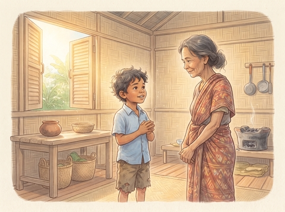 |
| Semana 22 Lisaun 22 |
Disípulu Ne'ebé Laran-Fidel ba Servisu Ki'ik Sira 📖 Lucas 16:10 · Galásia 5:22 Julia iha foho Ainaro fo ai-han ba manu-oan sira no lori balde bee ho laran-fidel no oin-midar loron-loron. |
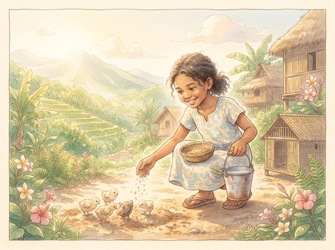 |
| Semana 23 Lisaun 23 |
Stop Istória no Kria Dame iha Uma Laran 📖 Mateus 5:9 Paulo iha Maliana halakon hirus no kaer liman ho nia alin hodi kria dame no halimar bola hamutuk. |
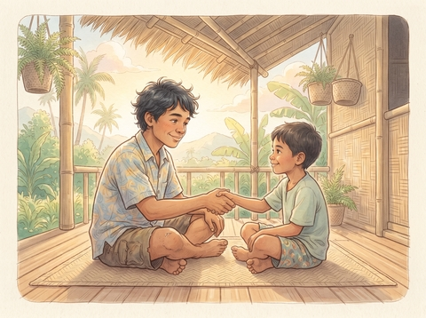 |
| Semana 24 Lisaun 24 |
Adora no Harohan Hamutuk iha Uma Laran (Família Orasaun) 📖 Deuteronómio 6:6-9 Marta no nia família iha Suai tuur hamutuk iha kalan hodi lee Bíblia no harohan iha naroman ahi-oan okos. |
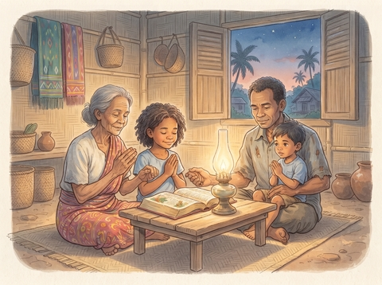 |
|
Lucas iha Liquiçá ko'alia lialos ho brani no husu deskulpa ba nia inan |
🎯 Tópiku Prinsipál Ohin
Ha'u la subar ka bosok, maibé ko'alia lialos no hatudu hahalok laran-moos iha Maromak no ema nia oin.
📖 Versíkulu Bíblia Ohin — Provérbiu 12:22
"Ibun ne'ebé bosok ne'e sasán aat iha Na'i nia oin, maibé sira ne'ebé halo hahalok lialos nian fo ksolok ba Nia." |
Maromak ne'e santu no lialos, no Nia gosta tebes bainhira Nia oan sira ko'alia lialos no hatudu laran-moos. Bosok ka subar sala hanesan suar nakukun ne'ebé halo klamar triste no haketak ita husi Maromak. Maibé lialos lori ksolok, paz, no naroman kmanek ba ita-nia moris.
Iha suku Liquiçá besik tasi, labarik-mane ida ho tinan sia naran Lucas halimar iha uma laran no soe bola to'o halo rahun bikan vidru foun ne'ebé inan gosta tebes. Lucas sente ta'uk boot tanba nia hanoin inan sei hirus no baku nia. Nia subar bikan rahun ne'e iha armáriu-okos no tuur finje la hatene.
Maibé iha kalan, Lucas sente laran todan no la bele toba hakmatek. Nia hanoin fali versíkulu Provérbiu 12:22 ne'ebé mestre Súnday School hanorin. Inan haree Lucas nia oin triste no husu neineik. Lucas brani hamriik, kaer liman ho matan-ben no ko'alia lialos: 'Inan, ha'u mak soe bola halo rahun bikan vidru ne'e, deskulpa ha'u!' Inan fo perdua ho laran-luak no hakuak Lucas metin. Lucas aprende katak ko'alia lialos lori paz no ksolok lialos ba klamar!
Misaun Prátika Semana Ne'e: Ha'u ko'alia lialos no laran-moos loron-loron! Semana ne'e, se ó halo sala ruma iha uma ka eskola, keta subar ka bosok, maibé brani dehan 'Ha'u halo sala ne'e, deskulpa ha'u' no ko'alia lialos ba inan-aman ka mestre.
|
Julia iha Ainaro fo ai-han ba manu-oan sira no lori bee ho laran-fidel |
🎯 Tópiku Prinsipál Ohin
Ha'u halo servisu uma nian no simu misaun ki'ik sira ho laran-fidel no responsabilidade kompletu.
📖 Versíkulu Bíblia Ohin — Lucas 16:10 · Galásia 5:22
"Ema ne'ebé laran-fidel iha servisu ki'ik sira leet, nia mós sei laran-fidel iha servisu boot sira leet; no ema ne'ebé la laran-moos iha servisu ki'ik sira leet, nia mós la laran-moos iha servisu boot sira..." |
Jesus buka disípulu sira ne'ebé laran-fidel (faithful) iha servisu ki'ik loron-loron nian. Servisu ki'ik sira hanesan: hamoos toba-fatin, lori bee, kuida manu-oan sira, ka arranja bikan sira... buat sira-ne'e hotu mak teste kmanek ida atu hatudu katak ita-nia laran di'ak no prontu atu simu servisu boot husi Maromak.
Iha foho Ainaro, labarik-feto ida ho tinan sanulu naran Julia simu tarefa ki'ik husi nia inan: fo ai-han ba manu-oan sira no rega ai-fuan sira iha dader-saan no lokraik. Dalaruma Julia hakarak halimar de'it no haluha nia tarefa. Maibé nia hanoin fali versíkulu Lucas 16:10 ne'ebé mestre hanorin.
Julia foti desizaun hodi halo servisu ne'e loron-loron ho laran-fidel sin murmu ka lamenta. Nia fo ai-han ba manu-oan sira ho oin-midar no kanta kantiku. Bainhira aman no inan haree Julia nia laran-fidel, sira hakuak nia ho laran ksolok no fo misaun kmanek foun ba nia. Julia aprende katak laran-fidel iha servisu ki'ik hamosu bensaun boot husi Na'i!
Misaun Prátika Semana Ne'e: Ha'u laran-fidel iha servisu ki'ik sira! Semana ne'e, hili servisu uma nian 1 (ezemplu: arranja toba-fatin, fo ai-han ba animál, lori lixu) no halo ho laran-fidel loron-loron sin inan-aman haruka dala rua.
|
Paulo iha Maliana kaer liman ho nia alin hodi kria dame iha varanda |
🎯 Tópiku Prinsipál Ohin
Ha'u la hamosu istória-aat ka bilán, maibé hatudu oin-kmaan no husu deskulpa atu kria dame iha uma no suku laran.
📖 Versíkulu Bíblia Ohin — Mateus 5:9
"Bensaun ba sira ne'ebé kria dame, tanba sira sei hanaran Maromak nia oan." |
Iha mundu ne'ebé ema gosta hakilar no istória, Jesus bolu Nia disípulu sira atu sai 'kria dame' (peacemaker). Ema ne'ebé kria dame la'ós ema fraku, maibé ne'e ema kbiit boot ne'ebé husik tiha hirus no egoízmu hodi lori dame, paz, no hakuak ba nia família no amigu sira.
Iha suku Maliana (Bobonaro), labarik-mane ida ho tinan sanulu naran Paulo no nia alin hadau bola bambú no sira hakarak istória manas no foti liman ba malu tanba fahe bola. Paulo sente hirus sa'e ba nia oin, maibé iha tempu ne'e nia hanoin fali Liafuan Jesus nian: 'Bensaun ba sira ne'ebé kria dame, tanba sira sei hanaran Maromak nia oan.'
Paulo dada iis naruk, fekit matan hodi halakon hirus, no dehan uluk ba nia alin: 'Alin, deskulpa ha'u hirus, mai ita fahe bola ne'e no halimar hamutuk ho dame!' Alin haree Paulo nia oin kmaan, oin-midar no fo liman kaer malu. Sira halimar hamutuk no lori ksolok boot ba uma laran. Paulo sente orgullu tanba nia sai Maromak nia oan ne'ebé kria dame!
Misaun Prátika Semana Ne'e: Ha'u kria dame iha ha'u-nia família no belun sira leet! Semana ne'e, bainhira bilán ka hahalok aat mosu, stop kedas hirus, ko'alia lian kmaan 'Mai ita halo dame', no fo hakuak ka liman-kaer.
|
Marta no nia família iha Suai lee Bíblia no harohan hamutuk iha kalan |
🎯 Tópiku Prinsipál Ohin
Ita tuur hamutuk ho inan-aman no maun-alin loron-loron atu adora, harohan, no lee Maromak nia Liafuan iha uma laran.
📖 Versíkulu Bíblia Ohin — Deuteronómio 6:6-9
"Liafuan sira ne'ebé ha'u mandatu mai ó ohin tenke hela iha ó-nia laran. Ó tenke hanorin Liafuan ne'e ho kbiit ba ó-nia oan sira, ko'alia kona-ba ne'e bainhira ó tuur iha uma..." |
Uma laran la'ós de'it fatin atu toba no han, maibé ne'e mak 'Igreja ki'ik' ne'ebé Maromak hatuur atu família hotu adora no harohan hamutuk. Bainhira inan-aman no oan sira tuur hamutuk loron-loron atu lee Bíblia no harohan, Maromak nia anju sira fo proteja no bensaun boot ba uma ne'e.
Iha suku Suai (Cova Lima), labarik-feto ida ho tinan sia naran Marta no nia família tuur hamutuk iha dader-saan no kalan depoiz jantár. Sira lori ahi-oan ki'ik ida, lori Bíblia no tuur iha biti laran. Marta foti babadok kanta kantiku Súnday School nian, inan lee versíkulu ida, no aman harohan foti bensaun ba sira hotu.
Maske iha li'ur anin maka'as ka meiu susar, Marta nia uma laran nakenu ho paz no ksolok lalehan nian. Marta aprende katak orasaun família nian loron-loron halo sira-nia domin sai metin no halo Satanás la bele tama atu harahun sira!
Misaun Prátika Semana Ne'e: Ha'u harohan no adora hamutuk ho ha'u-nia família! Semana ne'e, konvida inan-aman no maun-alin sira atu tuur hamutuk minutu 5 molok toba: kanta kantiku 1, lee versíkulu 1, no harohan hamutuk.
Módulu 7 (Semana 25 – 28): Hahi'i Família, Moris tuir Liafuan, no Domin iha Eskola
Livru lisaun Súnday School hodi hanorin labarik sira iha Timór-Leste atu fo agradesimentu no hahi'i família, moris tuir Maromak nia Liafuan iha hahalok lialos, hadomi belun foun sira iha eskola, no hatudu laran-maus ho kmaan.
| Semana 25 Lisaun 25 |
Hahi'i no Fo Kbiit ba Família iha Uma Laran 📖 1 Tesalónika 5:11 João iha Ermera fo karta agradesimentu ho dezeñu ai-funan ba nia inan no hahi'i nia maun ho ksolok. |
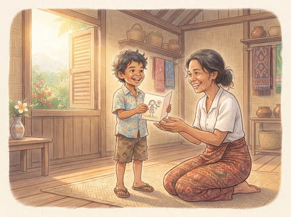 |
| Semana 26 Lisaun 26 |
Disípulu Lialos ne'ebé Moris tuir Maromak nia Liafuan 📖 Tiago 1:22 Simão iha Dili halai bá ajuda viziñu ferik lori ai-maran todan to'o uma hodi halo tuir Liafuan. |
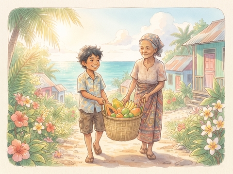 |
| Semana 27 Lisaun 27 |
Hadomi Belun Sira iha Eskola ho Jesus Nia Domin 📖 Joaõ 15:12 Carlota iha Liquiçá fahe katupa no ai-fuan jaca ba belun foun iha ai-mangga okos ho Jesus nia domin. |
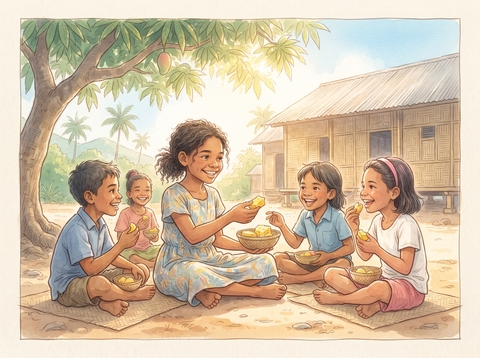 |
| Semana 28 Lisaun 28 |
Laran-Maus no Kmaan nu'udar Jesus Nia Disípulu 📖 Mateus 11:29 · Galásia 5:23 David iha Baucau fo liman kmaan ba belun ne'ebé soke nia iha jogu bola hodi hatudu laran-maus. |
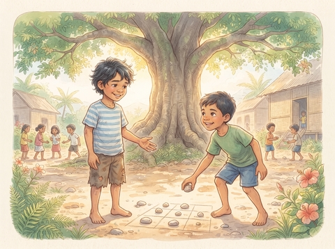 |
|
João iha Ermera fo karta agradesimentu ba nia inan ho oin-midar |
🎯 Tópiku Prinsipál Ohin
Ita fo agradesimentu ba família nia servisu no hahi'i sira-nia karakter di'ak hodi fo ksolok ba uma laran.
📖 Versíkulu Bíblia Ohin — 1 Tesalónika 5:11
"Nune'e fo kbiit ba malu no hahi'i malu, hanesan imi halo daudauk." |
Iha suku Ermera iha foho kofe-tahan okos, labarik-mane ida ho tinan sanulu naran João repara katak nia inan no aman halo servisu maka'as no kole loron-loron atu kuida família. Dalaruma, João no nia maun-alin sira tuur de'it no la fo atensaun ba servisu kmanek ne'ebé inan-aman halo.
Loron ida, rona tiha versíkulu 1 Tesalónika 5:11 iha Súnday School, João foti desizaun foun. Nia hakerek karta ki'ik ida ho dezeñu ai-funan no dehan ba nia inan: "Inan, obrigadu barak tanba te'in hahán kmanek loron-loron! Inan nia laran-di'ak mak furak liu!" Nia mós hakuak nia maun no dehan: "Maun, ó-nia laran-luak ajuda ha'u foti bee mak kmanek tebes!"
Inan no maun haksolok no oin-midar ho matan-ben ksolok nian. João aprende katak liafuan hahi'i no agradesimentu nian hanesan bee-matan kmanek ne'ebé halakon kole no halo uma laran nakenu ho paz no domin Jesus nian!
Misaun Prátika Semana Ne'e: Ha'u hahi'i no fo kbiit ba ha'u-nia família! Semana ne'e, foti momentu 1 ka dehan ba inan/aman/maun-alin: "Obrigadu barak tanba [servisu/di'ak]!" no fo hakuak.
|
Simão iha Dili ajuda viziñu ferik lori ai-maran todan to'o uma |
🎯 Tópiku Prinsipál Ohin
Ita la'ós rona de'it Maromak nia Liafuan iha Súnday School, maibé moris no halo tuir Liafuan ne'e iha uma no suku laran.
📖 Versíkulu Bíblia Ohin — Tiago 1:22
"Maibé sai ema ne'ebé halo tuir Liafuan ne'e, no la'ós de'it rona hodi bosok imi-nia an rasik." |
Iha suku Dili besik tasi, labarik-mane ida ho tinan sanulu-resin-ida naran Simão tuur iha Súnday School no hakerek de'it nota kmanek sira iha kadernu laran. Maibé bainhira fila ba uma, Simão dalaruma haluha tiha versíkulu sira no halo fali hahalok hirus ka baruk nian.
Loron ida, mestre lee versíkulu Tiago 1:22: 'Sai ema ne'ebé halo tuir Liafuan ne'e!' Simão sente kbiit Liafuan ne'e kona nia laran. Nia dehan iha orasaun: "Jesus, ha'u la hakarak sai ema ne'ebé rona de'it maibé haluha tiha! Ha'u hakarak hatudu iha hahalok lialos loron-loron!"
Fila ba uma, bainhira haree viziñu ferik ida lori ai-maran todan, Simão halai lalais no ajuda lori ai-maran ne'e to'o uma. Viziñu dehan bensaun ba nia. Simão aprende katak moris tuir Maromak nia Liafuan mak halo ita sai disípulu lialos ne'ebé fo naroman ba mundu!
Misaun Prátika Semana Ne'e: Ha'u halo tuir Maromak nia Liafuan loron-loron! Semana ne'e, hili versíkulu 1 ne'ebé ó aprende no prátika iha hahalok lialos (ezemplu: rona inan-aman, fo perdua, ka ajuda belun).
|
Carlota iha Liquiçá fahe katupa no ai-fuan ba belun foun iha ai-mangga okos |
🎯 Tópiku Prinsipál Ohin
Hanesan Jesus hadomi no fo kbiit mai ha'u, ha'u hatudu domin no agradesimentu ba ha'u-nia belun sira iha eskola.
📖 Versíkulu Bíblia Ohin — Joaõ 15:12
"Ne'e mak ha'u-nia mandamentu: hadomi malu hanesan ha'u hadomi tiha imi." |
Iha suku Liquiçá besik kintál eskola nian, labarik-feto ida ho tinan sia naran Carlota haree belun foun ida ne'ebé foin muda mai. Belun ne'e tuur mesak iha ai-mangga okos no haree moe tanba la iha belun atu halimar hamutuk.
Carlota hanoin fali mandamentu Jesus nian: 'Hadomi malu hanesan ha'u hadomi tiha imi!' Carlota halai bá hakuak ho oin-midar, fahe nia katupa no ai-fuan jaca kmanek, no konvida: "Mai ita halimar bola no kanta hamutuk!"
Belun foun ne'e oin-midar no ksolok moos tama ba nia laran. Sira sai belun metin tebes. Carlota aprende katak foti laran-luak no hadomi belun sira iha eskola mak hatudu Jesus nia oin-di'ak no naroman kmanek ba ema hotu-hotu!
Misaun Prátika Semana Ne'e: Ha'u hadomi ha'u-nia belun sira ho Jesus nia domin! Semana ne'e, dehan liafuan morin 1 no ajuda belun 1 iha eskola ne'ebé mesak ka presiza ajudante.
|
David iha Baucau fo liman kmaan ba belun ne'ebé soke nia iha jogu bola |
🎯 Tópiku Prinsipál Ohin
Ita husik tiha hahalok hirus ka foti-an, no hatudu laran-maus, respeitu, no kmaan ba amigu sira iha eskola.
📖 Versíkulu Bíblia Ohin — Mateus 11:29 · Galásia 5:23
"Foti ha'u-nia kanga ba imi no aprende husi ha'u, tanba ha'u laran-maus no kmaan iha laran; no imi sei hetan deskansu ba imi-nia klamar." |
Iha suku Baucau, labarik-mane ida ho tinan sanulu naran David halimar jogu bola ho nia belun sira iha kintál eskola nian. Iha jogu laran, belun ida soke David no halo David monu ba rai-rahun. Belun balu hakilar: "Baku nia fali!"
David sente hirus ki'ik sa'e ba nia laran, maibé nia hanoin fali Liafuan Jesus nian: 'Ha'u laran-maus no kmaan iha laran'. David hamriik neineik, hamoos rai-rahun husi kalsa, no fo liman kmaan ba belun ne'e hodi dehan: "La halo buat ida, mai ita kontinua halimar ho dame!"
Belun ne'e moe iha laran no husu deskulpa lialos ba David. Belun hotu-hotu respeitu David tanba nia laran-maus no kmaan. David aprende katak laran-maus no kmaan mak kbiit boot liu husi Espíritu Santu!
Misaun Prátika Semana Ne'e: Ha'u hatudu laran-maus no kmaan iha eskola! Semana ne'e, bainhira halo jogu ka halimar, la baku ka hirus, maibé ko'alia neineik no sede ba belun sira.
Módulu 8 (Semana 29 – 32): Kontrola-An, Armadura Maromak Nian no Santidade
Livru lisaun Súnday School hodi hanorin labarik sira iha Timór-Leste atu kontrola-an ho Espíritu Santu nia kbiit, hatais armadura Maromak nian kontra tentasaun, estuda ba Maromak nia glória, no brani refusa kultura aat.
| Semana 29 Lisaun 29 |
Kontrola-An no Ukun Kbiit Iha Espíritu Laran 📖 Galásia 5:23 · 1 Coríntios 9:25 Pedro iha Baucau desliga telemóvel atu estuda no halo dever eskola nian ho Espíritu Santu nia kbiit. |
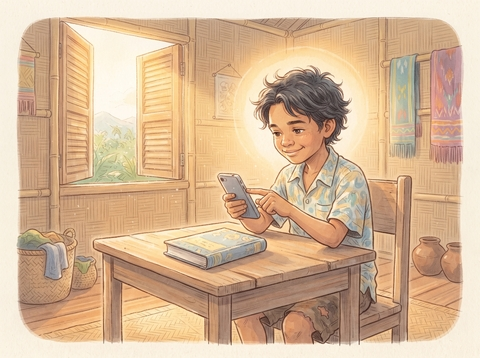 |
| Semana 30 Lisaun 30 |
Hatais Armadura Maromak Nian iha Funu Espiritual 📖 Efésiu 6:11-17 Mateus iha Ermera hamriik metin no brani refusa na'ok mangga viziñu nian hodi kaer eskudu fiar nian. |
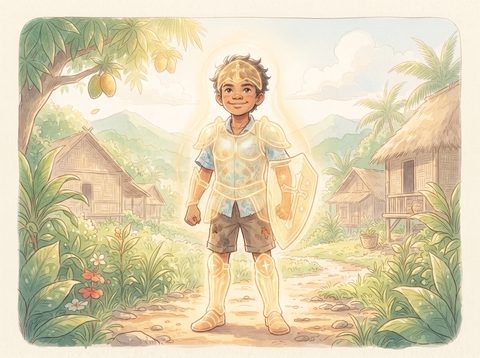 |
| Semana 31 Lisaun 31 |
Estuda ba Maromak Nia Glória no Serví Mundu 📖 1 Coríntios 10:31 Teresa iha Dili harohan husu matenek no estuda matemátika ho laran ksolok ba Maromak nia glória. |
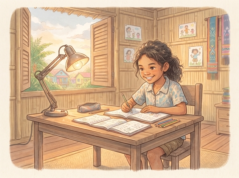 |
| Semana 32 Lisaun 32 |
Brani atu Refusa Kultura Aat no Tentasaun 📖 Roma 12:2 Francisca iha Maliana refusa ko'alia lia-aat no ba ajuda belun ne'ebé mesak iha kintál eskola nian. |
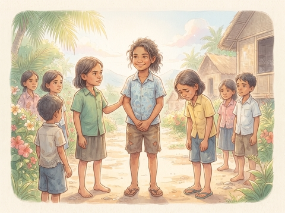 |
|
Pedro iha Baucau desliga telemóvel atu estuda no halo dever eskola nian |
🎯 Tópiku Prinsipál Ohin
Ita harohan no uza Espíritu Santu nia kbiit atu kontrola ita-nia an no vísiu sira iha jogu, halimar, no kabilán laran.
📖 Versíkulu Bíblia Ohin — Galásia 5:23 · 1 Coríntios 9:25
"... kbiit-an (kontrola-an). La iha lei ida ne'ebé kontra buat sira-ne'e. (Galásia 5:23) / Ema ne'ebé kompetisaun halai fatin halo kontrolu-an ba buat hotu-hotu..." |
Espíritu Santu nia fuan ida ne'ebé folin boot liu mak 'kontrola-an' (self-control). Ne'e dehan katak ita uza Maromak nia kbiit atu ukun ita-nia an, la husik hakarak aat, jogu telemóvel naruk, ka vísiu sira ukun ita-nia moris. Kontrola-an halo ita sai forte no matenek.
Iha suku Baucau, labarik-mane ida ho tinan sanulu naran Pedro gosta tebes halimar jogu iha telemóvel no halimar marmu (fatuk). Dalaruma, Pedro halimar to'o haluha estuda, haluha han, no la rona bainhira inan bolu. Pedro sente kbiit jogu nian ukun nia hanoin no halo nia laran manas.
Loron ida iha Súnday School, Pedro rona mestre hanorin 1 Coríntios 9:25: 'Ema ne'ebé halai fatin halo kontrolu-an ba buat hotu-hotu'. Pedro sente fuan pija iha laran. Fila ba uma, bainhira belun sira bolu halimar jogu to'o kalan, Pedro foti desizaun kmanek: 'Ha'u-nia an la'ós jogu nia atan, ha'u iha Espíritu Santu nia kbiit atu kontrola ha'u-nia an!' Pedro desliga telemóvel, halo dever eskola nian, no toba sedu. Pedro aprende katak kontrola-an lori liberdade no ksolok lialos ba klamar!
Misaun Prátika Semana Ne'e: Ha'u kontrola ha'u-nia an ho Espíritu Santu nia kbiit! Semana ne'e, foti limitasaun tempu 1 (ezemplu: halimar jogu telemóvel minutu 30 de'it, ka rona kedas bainhira inan bolu sin prolonga).
|
Mateus iha Ermera hamriik metin ho fiar hodi refusa tentasaun |
🎯 Tópiku Prinsipál Ohin
Ita hatais armadura espirituál Maromak nian hodi manán tentasaun no bosok husi diabu iha eskola no suku laran.
📖 Versíkulu Bíblia Ohin — Efésiu 6:11-17
"Hatais armadura kompletu husi Maromak, nune'e imi bele hamriik metin kontra diabu nia terus no lasu sira. Tanba ita-nia funu la'ós kontra isin no ran, maibé kontra ukun-na'in no kbiit nakukun sira... foti kaer eskudu fiar nian, no surik Espíritu nian ne'ebé mak Maromak nia Liafuan." |
Iha ita-nia moris loron-loron, iha funu espirituál ne'ebé ita la haree ho matan. Diabu hakarak soe tentasaun, bosok, no hahalok aat mai ita. Maibé Maromak fo vestidura no armadura espirituál kmanek mai ita: lialos nu'udar sintura, justisa nu'udar peitorál, evanjellu nu'udar sapatu, fiar nu'udar eskudu, no Maromak nia Liafuan nu'udar surik!
Iha suku Ermera, labarik-mane ida ho tinan sanulu-resin-ida naran Mateus enfrenta tentasaun boot iha eskola: belun sira book nia atu na'ok mangga viziñu nian no bosok mestre. Mateus sente ta'uk ki'ik no tenta atu tuir sira.
Maibé Mateus hanoin fali Liafuan Efésiu 6:11: 'Hatais armadura Maromak nian!' Mateus kaer metin 'eskudu fiar nian' no dehan lian kmaan maibé brani: 'Ha'u la na'ok no la bosok, tanba ha'u nu'udar soldadu Jesus nian ne'ebé la'o iha naroman laran!' Belun sira hakfodak no respeitu Mateus nia brani. Mateus aprende katak armadura Maromak nian proteje ita no halo ita manán tentasaun hotu-hotu!
Misaun Prátika Semana Ne'e: Ha'u hatais armadura Maromak nian loron-loron! Semana ne'e, molok sai husi uma, harohan: 'Aman Maromak, hatais ha'u ho Ita-nia armadura santu atu ha'u la monu ba tentasaun!'
|
Teresa iha Dili harohan no estuda matemátika ho laran ksolok |
🎯 Tópiku Prinsipál Ohin
Ita estuda no halo dever eskola nian ho laran-fidel atu fo glória ba Maromak no prepara an atu serví igreja no suku.
📖 Versíkulu Bíblia Ohin — 1 Coríntios 10:31
"Nune'e, se imi han ka hemu ka halo buat kualkér ida, halo buat hotu-hotu ba Maromak nia glória." |
Estuda la'ós de'it atu simu valór di'ak ka foti-an ba belun sira. Estuda mak oportunidade kmanek ne'ebé Maromak fo mai ita atu dezenvolve talentu sira no prepara an atu serví ema seluk. Bainhira ita estuda no halo dever ho laran-fidel, ita fo glória boot ba Maromak!
Iha suku Dili, labarik-feto ida ho tinan sia naran Teresa dalaruma sente baruk atu lee livru no halo dever eskola nian. Nia tuur iha meza oin no lamenta tanba matemátika susar.
Maibé mestre Súnday School hanorin versíkulu 1 Coríntios 10:31: 'Halo buat hotu-hotu ba Maromak nia glória'. Teresa foti kaneta, fekit matan harohan: 'Jesus, fo matenek no pasiénsia mai ha'u, ha'u estuda ba Ita-nia glória!' Teresa aprende matemátika ho laran ksolok no hetan rezultadu di'ak. Teresa aprende katak estuda ho laran-fidel fo glória ba Na'i no loke dalan ba futuru kmanek!
Misaun Prátika Semana Ne'e: Ha'u estuda ba Maromak nia glória! Semana ne'e, molok halo dever eskola nian, harohan minutu 1: 'Na'i, fo matenek mai ha'u, ha'u halo servisu ne'e ba Ita!'
|
Francisca iha Maliana refusa ko'alia lia-aat no ba ajuda belun ne'ebé mesak |
🎯 Tópiku Prinsipál Ohin
Ita la tuir hahalok aat no prasa aat sira husi mundu, maibé hamriik santu no hatudu oin-di'ak iha Maromak nia naroman laran.
📖 Versíkulu Bíblia Ohin — Roma 12:2
"Keta husik imi-nia an banati tuir mundu ne'e nia oin, maibé husik imi-nia an nakfila ho imi-nia hanoin foun, nune'e imi bele hatene Maromak nia hakarak ne'ebé di'ak, haksolok, no kompletu." |
Iha mundu ne'ebé ita moris, iha kultura ka hahalok balu ne'ebé la di'ak: ko'alia lia-aat, goza amigu, na'ok, ka la respeitu mestre/inan-aman. Nu'udar Maromak nia oan, ita la bele tuir hahalok aat sira-ne'e, maibé ita brani atu refusa no moris kmanek iha lialos laran.
Iha suku Maliana (Bobonaro), labarik-feto ida ho tinan sanulu naran Francisca haree belun sira iha eskola troka hahalok: sira gosta hakilar lia-aat no ignora amigu ida ne'ebé ki'ak. Belun sira bolu Francisca: 'Mai tuir ami, se lae ita la'ós amigu!'
Francisca sente presaun ki'ik, maibé nia hanoin fali Roma 12:2: 'Keta banati tuir mundu ne'e!' Francisca oin-midar maibé dehan metin: 'Ha'u ama imi, maibé ha'u la ko'alia lia-aat no la ignora amigu. Ha'u hili atu ko'alia morin no ajuda ema hotu-hotu!' Belun sira sente moe iha laran no balu troka sira-nia hahalok. Francisca aprende katak refusa kultura aat lori bensaun no santidade ba moris!
Misaun Prátika Semana Ne'e: Ha'u refusa kultura aat no moris santu! Semana ne'e, se belun sira konvida halo hahalok aat (ko'alia lia-aat, goza), dehan ho brani no domin: 'Ha'u la tuir hahalok ne'e!'